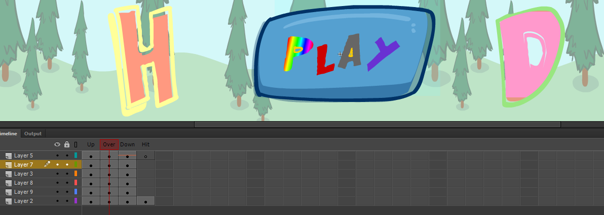

My final project was to make a web based musical application that required music/sounds to be triggered with specific actions and also contain a form of animated graphic. I created a very basic application that played music when clicked on certain buttons and also have some change in animation when the music started playing.
Given that this software had come out fairly recently, there weren’t many useful/helpful information that I could research on for this project. A single youtube tutorial video was the biggest help for me in understanding how this application had to be made and the various steps that are involved in creating each aspect of the application. I also googled for examples looking for inspiration on how I would like to design my application
With the limited resources and research content available to me at hand along with the lack of experience in using the software, I decided that I would make something at the basic level that would be enough to cover the minimum requirements of this project. This decision was made as I did not want to try to make something more interactive as I did not have enough technical knowledge and the time it would have consumed to understand and work on the application would not have been feasible for me. Hence, I made a simple application where I added self-drawn animations to a background that would play music when they were clicked on. I also added animation on them so they would switch their colour/design when the music played.
I used Adobe Animate for making this project because my lecturer informed me that this was amongst the best application available for making a web based musical application and would be easier for a first timer to use. The background picture for the application was downloaded from the internet and then added to the animation. After this, I made different designs over the background that I would later give the function to make music. Each of these designs had to be made with multiple layers to add each specific function that I wanted them to perform when played. As I have previously mentioned, due to my lack of experience in making musical applications, my designs were very basic and elementary as I did not wish to spend to much time over in depth technical aspects that would be time consuming.
changing animation while clicking
Drawing button that will play music when user click on it
Layers added to play different animation while clicking on it or going over it.
My major challenge was the lack of experience when it came to web based animation. This drawback was only amplified by the fact that the software had only recently released and there wasn’t much information available online that I could use to my advantage to add some technical specification to the project. As a result, I had to settle with a very basic application.